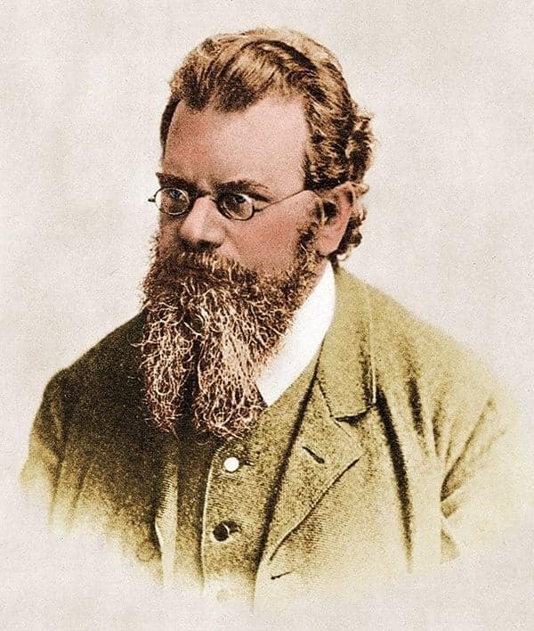
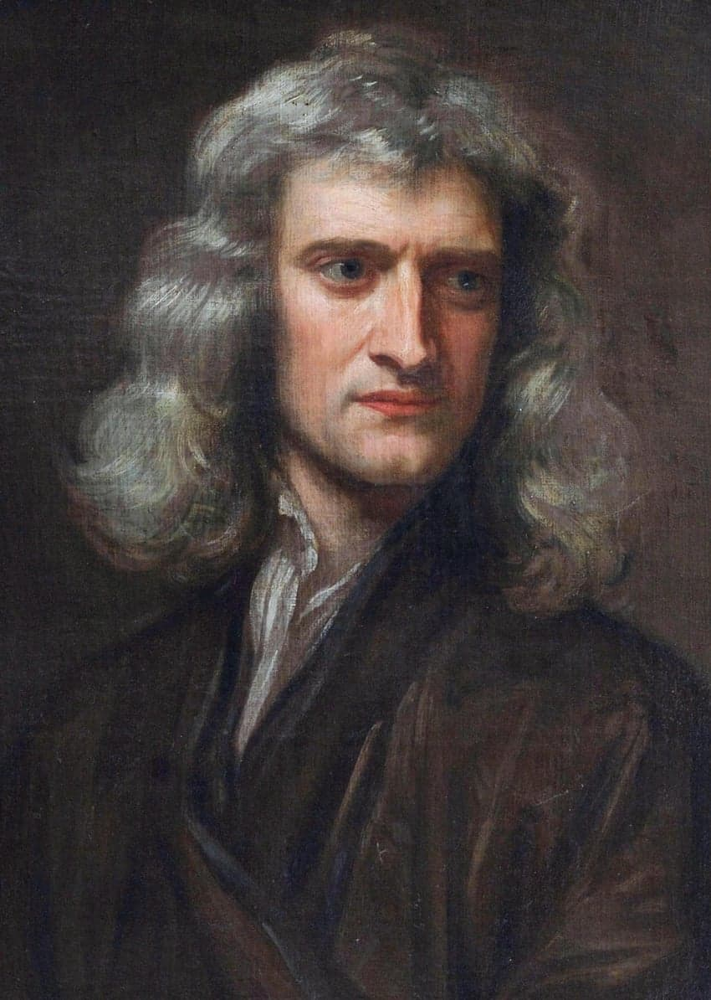
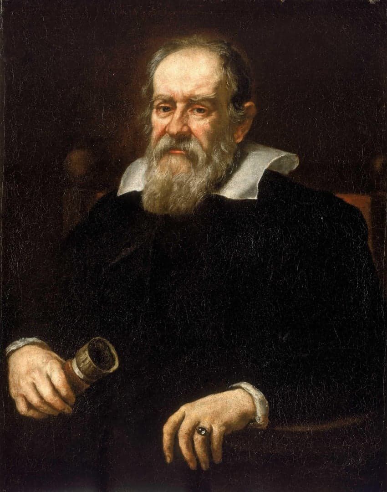
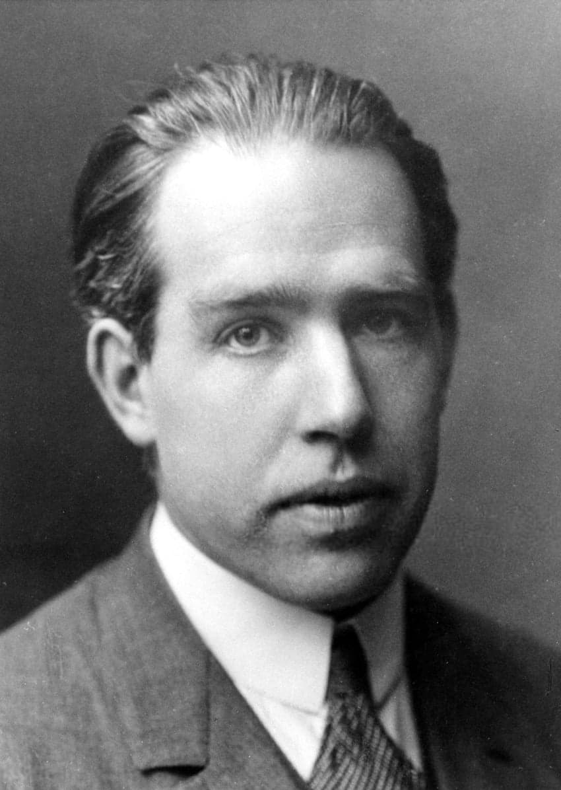
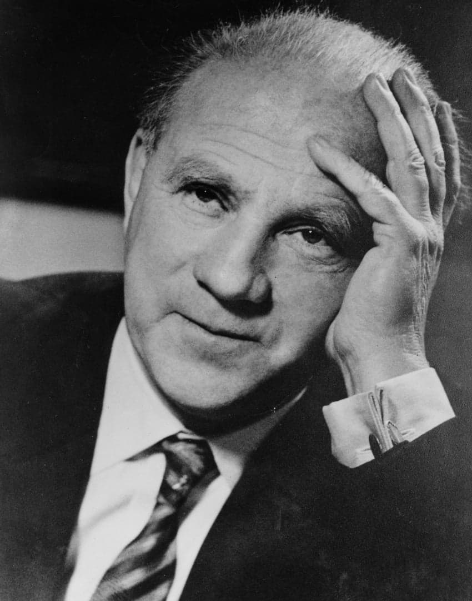
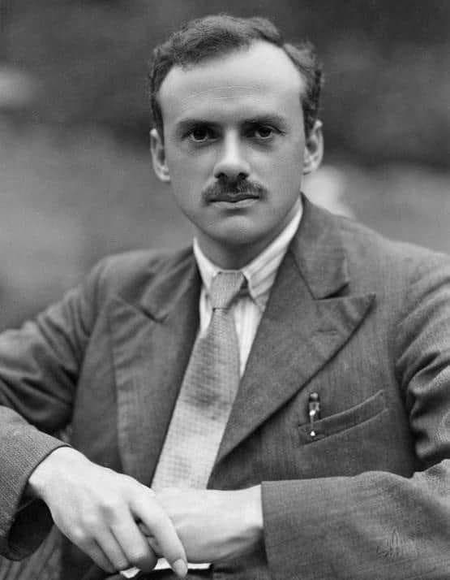
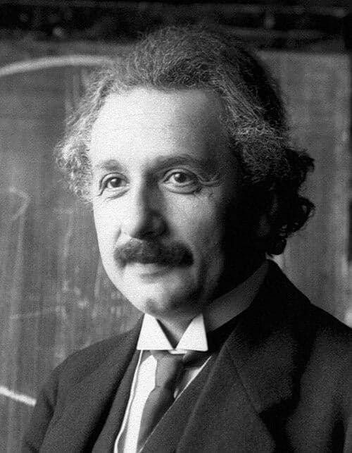
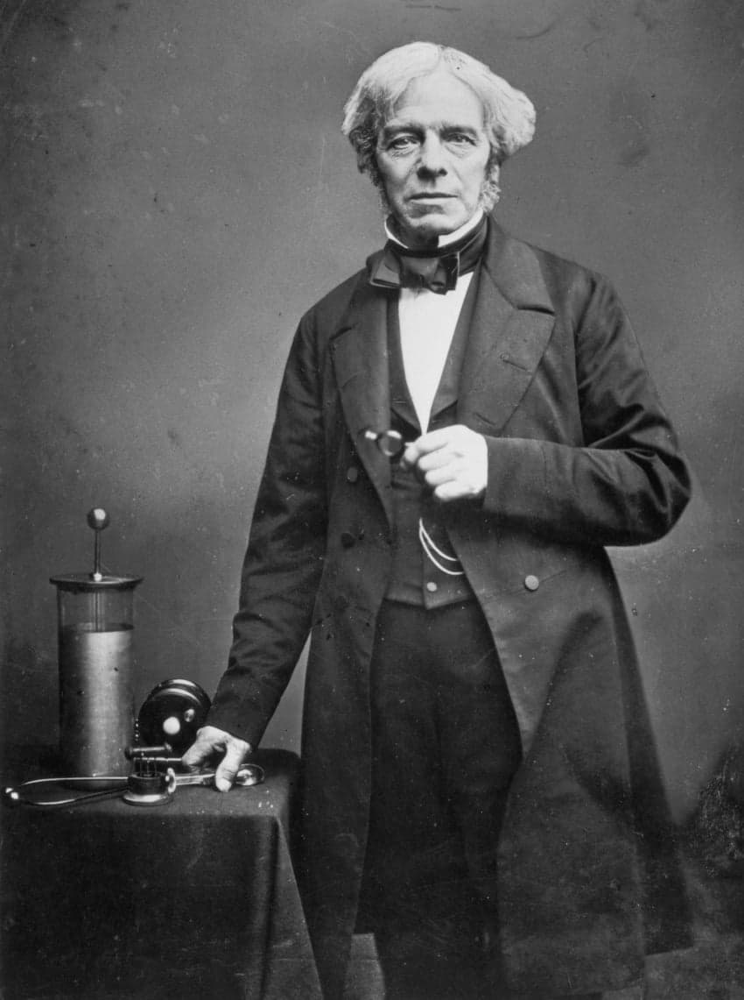
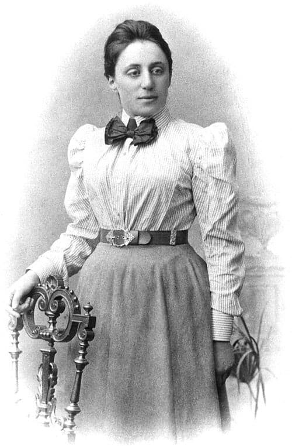

10위
루트비히 볼츠만
통계역학의 창시자이자 열역학 제 2법칙을 확립한 물리학자.
열과 엔트로피 같은 거시적인 성질의 움직임을 미시적인 입자들의 확률의 파생에서 기원함을 통찰로 이해하였고 '시간' 의 성질과 흐름이 엔트로피의 증가에 있음을 밝혀내었다.

9위
아이작 뉴턴
고전역학의 아버지이자 인류를 무지에서 끌어낸 물리학자.
단순한 직관만으로 사과가 떨어지는 현상과 천체가 움직이는 현상의 원리가 같음을 파악하고 이를 미적분이란 새로운 수학체계를 발명해 설명하는 소름돋는 천재성을 지녔다.
다만 전 재산을 스캠코인에 올라타서 털린 점이나 인생의 대부분을 물리학이 아닌 신학과 연금술같은 유사학문에 낭비한 건 그의 천재성을 아쉽게 보이게 하는 점이기도 하다.

8위
갈릴레이 갈릴레오
그가 가진 천재적인 점이라면 현실에서 구현할 수 없는 완벽한 상황을 사고실험이라는 비약적 방법론이라는 해법으로 물리학에 가장 처음으로 도입한 학자라는 점이다.
그는 머릿속에서 사고실험을 통해 이론을 체계적으로 확장해 나갔으며 이후 피사의 사탑 실험을 통해 2000년 넘게 사람들이 믿어온 아리스토텔레스 역학이 틀렸음을 증명해내었다.

7위
닐스 보어
전자의 움직임이 기존 고전 역학에 반하는 모순에 대해 전자는 운동이 아닌 도약한다는 혁신적이면서도 기존 관념을 붕괴시키는 이론을 제시한 물리학자. 양자 역학에 상보성의 원리와 같은 이론을 통해 오늘날의 양자 역학의 기본 뼈대를 세웠다.
아인슈타인이 제시한 날카로운 양자역학에 대한 반대 사고실험 제안을 직관을 통해 몇번이나 격파하기도 한 인물.
6위
리처드 파인만
양자세계의 복잡한 상호작용을 매우 직관적으로 표현해낸 파인만 다이어그램과 이를 수학적으로 기술해낸 경로적분으로 유명한 물리학자.
파인만은 기존에 없던 누구도 상상하지 못한 새로운 것을 발굴하는 천재성보다는 이미 존재하는 이론에 대해, 추상적인 양자세계를 시각적인 물리적 모델로 표현하는데 있어서 매우 천재적인 능력을 보여주었다.

5위
베르너 하이젠베르크
미시 세계의 기본 법칙인 불확정성 원리를 정립한 물리학자.
하이젠베르크는 이제까지 모든 사람들의 상식에 있던 고전역학개념에서 벗어나 양자세계에서는 입자의 위치와 운동량을 정확히 알 수 없으며 이는 관측기술의 한계가 아닌 입자의 근본 속성임을 주장하였고 이는 사실로 드러났다.
세상의 근본이 확정되지 않은 불확정이라는 점은 많은 과학자들의 - 심지어 아인슈타인같은 - 반발을 받았으나 이는 곧 우주의 진리였던것이다.

4위
폴 디랙
천재 괴짜 물리학자였던 디랙은 그 성격만큼이나 매우 특이한 물리학에 대한 지론을 가지고 있었는데 바로 물리학의 진리는 아름다운 수학적 심미안과 방정식에서 온다는 지론이었다.
수헉적 수식의 아름다움을 중시하던 디랙은 어느 날 디랙 방정식의 수식을 풀다가 보통은 나올 수 없는 마이너스 값의 결과에 주목하였고 다른 학자라면 오류였거나 하고 넘겼을만한 걸 수학의 아름다움을 믿고 오로지 수학적 영감으로 그 누구도 물질에 반대되는 반물질이란 개념을 상상조차 못하던 시기에 일반적인 물질에 반하는 '반물질' 의 존재를 유도하고 예견하였다.

3위
알베르트 아인슈타인
설명이 불필요한 그야말로 '천재 과학자' 의 대명사.
아인슈타인은 물리적 현상을 수식화하기 전에 자연법칙을 머릿속에서 어떻게 현실에서 보일까를 상상하는 능력에서 빛을 발했는데 어릴적부터 생각하던 빛의 속도로 날아가며 거울을 본다면? 어떨게 될까? 과 같은 것을 꾸준히 떠올리며 모순과 진리를 찾는 능력이 매우 탁월하였다. 이런 천재성은 상대성 이론의 발견을 이끌어냈다.

2위
마이클 패러데이
전자기학의 아버지. 천재가 즐비한 과학자들 사이에서도 진짜배기 천재라 인정받는 물리학자. 그의 순수한 물리적 직관에 대한 천재성은 인류 역사상 최고라고 해도 부족함이 없을 정도.
충격적인 점은 패러데이는 정규교육을 받지 못해서 물리학자들에겐 기본 도구이자 언어나 다름없는 수학적 능력이 0에 가까운, 기본적인 방정식과 삼각함수도 못 풀 정도의 수포자나 다름이 없었다는 것이었는데 이런 상황에도 불구하고 현상을 오로지 직관으로 파악하고 실험을 통해 진리를 이끌어냈다는 점이다.
현대 물리학에서 중요한 개념인 장(Field) 이론의 탄생에 결정적 역할을 했으며 이런 그의 이론은 맥스웰이 수식화함으로서 완성되었다.

1위
에미 뇌터
여성이 차별받던 시기에도 불구하고 현대 물리학의 근본이자 우주의 근원에 통하는 사실을 찾아낸 최고의 물리학자이자 수학자.
상대성이론을 수학적 오류때문에 쩔쩔매며 완성하고 있지 못하던 아인슈타인은 당대 최고의 추상대수학의 천재였던 그녀에게 헬프콜을 불렀는데 그녀는 자신의 전공을 살려 물리적 현상에 대해 오류를 파악하다가 마침내 대칭성과 보존법칙의 정리 -뇌터의 정리를 유도하고 상대성 이론을 완성시키는데 핵심적인 역할을 하였다.
모든 대칭에는 반드시 보존되는 물리량이 있다는 이 정리는 지금까지 모든 물리학의 패러다임을 바꾸는 수준이었는데 모든 물리학자는 예외없이 뇌터의 정리를 처음 접하는 순간 지금까지 배운 모든것이 퍼즐이 짜맞추어지듯 정리되는 느낌을 받는다고 한다. 사실상 100% 에 가까운 비율로 현대 물리학자들은 대칭이야 말로 우주의 근본이자 확고한 이정표라 여기고 물리현상을 탐구중이다.
설령 (그럴 일은 없겠지만) 열역학 2법칙이 무너지더라도 뇌터의 정리는 수학적 정리라 그럴 일이 없다는 점은 이 정리의 심오함을 일 수 있다.
댓글
수집 당시 댓글 248개
· ㅇㅇ · 11.13 09:25:56
· ㅇㅇ · 11.13 09:27:54
· ㅇㅇ · 11.13 09:31:02
· ㅇㅇ · 11.13 09:34:25
· ㅇㅇ · 11.13 09:44:52
· ㅇㅇ · 11.13 09:45:11
· ㅇㅇ · 11.13 13:43:09
ㅇㅇ · 11.13 09:25:36
· ㅇㅇ · 11.13 09:37:34
케떡 · 11.13 09:25:48
ㅇㅇ · 11.13 09:26:37
물로켓
쏴~라
· ㅇㅇ · 11.13 09:26:50
ㅇㅇ · 11.13 09:31:08
ㅇㅇ · 11.13 09:32:36
ㅇㅇ · 11.13 09:41:22
ㅇㅇ · 11.13 09:44:41
형보수지 · 11.13 09:44:59
무지개혼문 · 11.13 09:49:18
ㅇㅇ · 11.13 09:49:25
· ㅇㅇ · 11.13 15:34:13
ㅇㅇ · 11.13 09:49:28
ㅇㅇ · 11.13 09:50:54
· ㅇㅇ · 11.13 09:52:38
· ㅇㅇ · 11.13 10:24:54
· ㅇㅇ · 11.13 10:36:04
· ㅇㅇ · 11.13 10:37:11
· ㅇㅇ · 11.13 10:42:46
· ㅇㅇ · 11.13 10:54:41
· ㅇㅇ · 11.13 12:40:27
ㅇㅇ · 11.13 09:51:00
· ㅇㅇ · 11.13 10:33:13
· ㅇㅇ · 11.13 11:00:26
ㅇㅇ · 11.13 09:54:13
ㅇㅇ · 11.13 09:56:01
ㅇㅇ · 11.13 09:56:36
· ㅇㅇ · 11.13 10:53:58
ㅇㅇ · 11.13 10:04:04
ㅇㅇ · 11.13 10:05:36
· ㅇㅇ · 11.13 10:09:50
ㅇ · 11.13 10:07:41
ㅇㅇ · 11.13 10:10:35
ㅇㅇㅇ · 11.13 10:11:28
애미
ㄴㅇㄹㅇㄴ · 11.13 10:16:39
ㅇㅇ · 11.13 10:26:19
· ㅇㅇ · 11.13 10:45:50
ㅇㅇ · 11.13 10:29:53
ㅇㅇ · 11.13 10:32:14
ㅇㅇ · 11.13 10:33:21
· ㅇㅇ · 11.13 10:46:18
ㅇㅇ · 11.13 10:35:35
ㅇㅇ · 11.13 10:37:29
ㅇㅇ · 11.13 10:41:59
에미
씨발
ㅇㅇ · 11.13 10:46:05
· ㅇㅇ · 11.13 16:13:38
ㅇㅇ · 11.13 10:51:24
· ㅇㅇ · 11.13 10:53:01
· ㅇㅇ · 11.13 10:53:29
· ㅇㅇ · 11.13 11:00:43
ㅇㅇ · 11.13 10:51:35
· ㅇㅇ · 11.13 11:01:01
· ㅇㅇ · 11.13 12:12:05
· ㅇㅇ · 11.13 14:01:12
· ㅇㅇ · 11.13 14:12:45
ㅇㅇ · 11.13 10:52:47
멍청해씨 · 11.13 10:53:41
ㅇㅇ · 11.13 11:13:15
지랄
에미는
니미
· ㅇㅇ · 11.13 16:13:11
ㅇㅇ · 11.13 11:20:00
ㅇㅇ · 11.13 11:20:05
ㅇㅇ · 11.13 11:39:00
ㅇㅇ · 11.13 11:40:14
ㅇㅇ · 11.13 11:48:21
· ㅇㅇ · 11.13 12:13:58
ㅇㅇ · 11.13 12:27:57
· ㅇㅇ · 11.13 18:13:48
삭제됨 · 11.13 12:29:49
· ㅇㅇ · 11.13 13:05:00
ㅈ레이븐 · 11.13 12:45:23
ㅇㅇ · 11.13 12:57:58
ㅇㅇ · 11.13 13:21:17
ㅇㅇ · 11.13 13:31:24
ㅇㅇ · 11.13 13:56:45
ㅇㅇ · 11.13 14:11:35
ㅇㅇ · 11.13 14:14:38
ㅇㅇ · 11.13 15:15:18
ㅇㅇ · 11.13 15:15:29
ㅇㅇ · 11.13 15:29:25
ㅇㅇㅇ · 11.13 16:04:36
ㅇㅇ · 11.13 16:35:59
ㅇㅇ · 11.13 16:58:30
ㅇㅇ · 11.13 17:18:04
ㅇ ㅇ · 11.13 17:43:30
ㅇㅇㅇ · 11.13 18:37:28
ㅇㅇ · 11.13 18:42:48
ㅇㅇ · 11.13 18:42:52
ㅇㅇ · 11.13 18:42:58
ㅇㅇ · 11.13 18:43:02
ㅇㅇ · 11.13 18:43:11
ㅇㅇ · 11.13 18:43:19
ㅇㅇ · 11.13 18:43:25
ㅇㅇ · 11.13 08:43:18
주님한명더갑니다 · 11.13 08:43:41
ㅇㅇ · 11.13 08:44:27
· ㅇㅇ · 11.13 08:50:43
ㅇㅇ · 11.13 08:45:07
· ㅇㅇ · 11.13 08:46:52
· ㅇㅇ · 11.13 08:58:25
· ㅇㅇ · 11.13 08:59:08
· 무지개혼문 · 11.13 09:48:33
ㅇㅇ · 11.13 08:45:40
· ㅇㅇ · 11.13 08:49:31
· ㅇㅇ · 11.13 10:33:07
ㅇㅇ · 11.13 08:46:47
· 카미네코 · 11.13 08:49:20
· ㅇㅇ · 11.13 08:58:16
ㅇㅇ · 11.13 08:47:17
· ㅇㅇ · 11.13 10:29:18
ㅇㅇ · 11.13 08:49:40
ㅇㅇ · 11.13 08:50:37
ㅇㅇ · 11.13 08:51:16
· ㅇㅇ · 11.13 08:51:22
· ㅇㅇ · 11.13 08:52:27
ㅇㅇ · 11.13 08:51:30
ㅇㅇ · 11.13 08:51:46
ㅇㅇ · 11.13 08:51:47
ㅇㅇ · 11.13 08:54:24
· ㅇㅇ · 11.13 08:57:42
ㅇㅇ · 11.13 08:55:06
· ㅇㅇ · 11.13 08:56:30
· ㅇㅇ · 11.13 09:08:13
· ㅇㅇ · 11.13 10:26:33
· ㅇㅇ · 11.13 10:34:08
· ㅇㅇ · 11.13 10:39:08
· ㅇㅇ · 11.13 10:39:49
ㅇㅇ · 11.13 08:55:12
ㅇㅇ · 11.13 08:55:49
ㅇㅇ · 11.13 08:56:43
· ㅇㅇ · 11.13 09:00:04
ㅇㅇ · 11.13 08:58:19
· ㅇㅇ · 11.13 08:59:43
· ㅇㅇ · 11.13 09:00:22
· ㅇㅇ · 11.13 09:19:18
Diogenes · 11.13 08:59:48
· ㅇㅇ · 11.13 10:59:17
· Diogenes · 11.13 11:00:28
ㅇㅇ · 11.13 09:01:27
· ㅇㅇ · 11.13 09:42:29
ㅇㅇ · 11.13 09:02:01
ㅇㅇ · 11.13 09:03:00
· ㅇㅇ · 11.13 09:03:56
ㅇㅇ · 11.13 09:03:26
· ㅇㅇ · 11.13 09:04:34
· ㅇㅇ · 11.13 09:05:24
· ㅇㅇ · 11.13 10:32:56
· ㅇㅇ · 11.13 11:00:05
ㅇㅇ · 11.13 09:03:47
ㅇㅇ · 11.13 09:04:49
모하메드압두르후세인 · 11.13 09:06:23
· 철석 · 11.13 09:10:16
ㅇㅇ · 11.13 09:07:53
ㅇㅇ · 11.13 09:10:24
· ㅇㅇ · 11.13 09:12:56
ㅇㅇ · 11.13 09:10:50
· 가츠 · 11.13 12:00:04
ㅇㅇ · 11.13 09:12:36
· Diogenes · 11.13 09:34:43
ㅇㅇ · 11.13 09:15:07
ㅇㅇ · 11.13 09:16:34
· ㅇㅇ · 11.13 09:25:39
ㅇㅇ · 11.13 09:16:39
ㅇㅇ · 11.13 09:16:49
ㅇㅇ · 11.13 09:16:55
· ㅇㅇ · 11.13 09:47:27
· ㅇㅇ · 11.13 10:12:53
· ㅇㅇ · 11.13 10:44:08
· ㅇㅇ · 11.13 10:50:21
ㅇㅇ · 11.13 09:20:46
ㅇㅇ · 11.13 09:20:56
· ㅇㅇ · 11.13 13:23:02
ㅇㅇ · 11.13 09:21:57
· Diogenes · 11.13 09:22:48
· ㅇㅇ · 11.13 09:24:16
· Diogenes · 11.13 09:26:06
· ㅇㅇ · 11.13 09:27:15
· Diogenes · 11.13 09:28:13
· ㅇㅇ · 11.13 09:32:07
· ㅇㅇ · 11.13 12:26:40
· Diogenes · 11.13 12:27:28
· ㅇㅇ · 11.13 12:28:21
· Diogenes · 11.13 12:29:59
· ㅇㅇ · 11.13 12:31:23
· Diogenes · 11.13 12:31:52
· ㅇㅇ · 11.13 12:36:10
· Diogenes · 11.13 12:37:15
· ㅇㅇ · 11.13 13:04:20
· Diogenes · 11.13 13:07:22
ㅇㅇ · 11.13 09:22:53
ㅇㅇ · 11.13 09:23:43
· ㅇㅇ · 11.13 09:24:27
· ㅇㅇ · 11.13 09:25:02
ㅇㅇ · 11.09 18:24:01
ㅇㅇ · 11.13 08:30:51
· 토라만 · 11.13 08:31:17
ㅇㅇ · 11.13 08:31:11
· ㅇㅇ · 11.13 08:36:44
· PS5 · 11.13 08:38:37
ㅇㅇ · 11.13 08:31:42
실베도로롱 · 11.13 08:32:41
· 실베도로롱 · 11.13 08:34:55
푸른반복 · 11.13 08:32:44
ㅇㅇ · 11.13 08:32:52
ㅇㅇ · 11.13 08:32:57
ㅇㅇ · 11.13 08:33:09
· ㅇ · 11.13 09:25:06
KDB · 11.13 08:33:12
ㅇㅇ · 11.13 08:33:29
ㅇㅇ · 11.13 08:33:55
· ㅇㅇ · 11.13 08:54:17
ㅇㅇ · 11.13 08:35:17
ㅇㅇ · 11.13 08:35:53
· ㅇㅇ · 11.13 08:36:42
· ㅇㅇ · 11.13 08:37:33
· ㅇㅇ · 11.13 08:39:21
· ㅇㅇ · 11.13 08:49:25
· ㅇㅇ · 11.13 08:50:01
· ㅇㅇ · 11.13 08:54:10
ㅇㅇ · 11.13 08:36:53
ㅇㅇ · 11.13 08:37:11
ㅇㅇ · 11.13 08:37:34
ㅇㅇ · 11.13 08:38:03
카미네코 · 11.13 08:38:48
ㅇㅇ · 11.13 08:39:10
사연옥 · 11.13 08:39:49
ㅇㅇ · 11.13 08:39:53
ㅇㅇ · 11.13 08:40:05
ㅇㅇ · 11.13 08:40:08
ㅇㅇ · 11.13 08:40:21
· ㅇㅇ · 11.13 09:39:38
ㅇㅇ · 11.13 08:40:54
ㅇㅇ · 11.13 08:41:01
ㅇㅇ · 11.13 08:41:13
ㅇㅇ · 11.13 08:41:30
ㅇㅇ · 11.13 08:42:12
ㅇㅇ · 11.13 08:42:26
ㅇㅇ · 11.13 08:42:57
· ㅇㅇ · 11.13 08:44:19
ㅇㅇ · 11.13 08:42:59
마인츠05 · 11.13 08:43:01